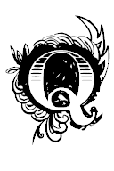

uả thật Mariuytx đã bị bắt làm tù. Tù của Giăng VanGiăng.
Cái bàn tay từ đằng sau đưa ra nắm giữ chàng mà lúc ngất đi chàng còn cảm thấy chạm vào da thịt, đó là bàn tay của Giăng VanGiăng.
Giăng Vangiăng xông xáo trong chiến trường chỉ để nhận mọi sự nguy hiểm. Trong cảnh trận địa hấp hối không có ông thì chẳng có ai nghĩ đến những người bị thương; giữa cuộc tàn sát, ông có mặt ở mọi nơi, như một cứu tinh. Nhờ ông, những người ngã xuống được nâng dậy, mang vào gian phòng dưới và băng bó. Ngớt thì ông sửa chữa chiến lũy. Nhưng tay ông không hề làm một cử chỉ nào có thể gọi là bắn, là chém, là đánh, thậm chí chống đỡ tự vệ. Ông lặng lẽ cứu người. Vả chăng đạn không thèm thịt ông, ông chỉ bị vài vết trầy trợt nhẹ nhẹ. Nếu như lúc tìm đến chỗ mộ địa này, ông có ý định tự tử, thì điều mơ ước của ông chẳng được thực hiện. Nhưng chúng tôi tin rằng ông không định tự tử, vì tự tử là một hành vi không hợp đạo Chúa.
Giăng VanGiăng có vẻ như không trông thấy Mariuytx trong cảnh khói bụi mù mịt. Nhưng sự thật mắt ông không hề rời chàng. Khi Mariuytx trúng đạn ngã xuống thì Giăng VanGiăng nhảy đến nhanh như con hổ, vồ lấy chàng như vồ con mồi và mang chàng đi.
Cuộc tiến đánh như gió lốc xoắn vào Ănggiônrátx và cửa quán Côranh, nên không ai trông thấy Giăng VanGiăng mang Mariuytx bất tỉnh vượt qua chiến lũy tung tóe và lẩn vào sau góc quán.
Góc quán ấy nhô ra ngoài đường phố, nhờ vậy có một vuông đất nho nhỏ không có đạn bay tới, và mắt người cũng không thể trông vào. Trong những đám cháy nhà, thỉnh thoảng có một căn buồng không bén lửa, cũng như trên mặt biển cuồng đây đó bên kia một mỏm núi nhô ra hay giữa một vũng có đá lởm chởm, vẫn có một khoảng phẳng lì. Vuông đất này cũng giống như thế. Đó là chỗ Êpônin tránh ra để thở hơi cuối cùng.
Đến đó, Giăng VanGiăng đứng lại đặt Mariuytx xuống đất, tựa lưng vào tường và nhìn chung quanh.
Tình hình thật là kinh khủng.
Bây giờ đây, và có thể trong hai ba phút nữa, bức vách này là một chỗ nấp. Nhưng rồi làm sao thoát khỏi cuộc tàn sát nơi đây? VanGiăng hồi tưởng nỗi hoang mang của ông tám năm về trước ở phố Pôlôngxô và nhớ lại cách ông đã làm thế nào để trốn thoát. Lúc ấy quả là khó khăn, nhưng bây giờ mới thật là hết cách. Trước mặt ông là một ngôi nhà sáu tầng nghiệt ngã và câm bặt, hình như chỉ có một người là một ông già ngồi gục đầu chết trên bậu cửa sổ. Bên phải là chiến lũy phố Tơruyăngđơri không cao lắm, vượt qua không khó; nhưng ông thấy nhô lên khỏi ngọn chiến lũy một làng lưỡi lê lởm chởm. Đó là quân đội chính qui bố trí rình chờ. Rõ ràng là vượt qua chiến lũy nhỏ ấy tức là đi hứng một loạt súng, và ai nhô đầu lên khỏi chiến lũy tức khắc sẽ làm bia cho sáu mươi họng súng châu vào đấy. Bên trái là chiến trường. Đằng sau bức tường là cảnh chết.
Làm thế nào?
Chỉ có mọc cánh như chim mới có thể thoát khỏi nơi ấy.
Ấy thế mà phải quyết định ngay, phải nghĩ ra phương kế ngay, không thì không kịp. Người ta đánh nhau cách ông mấy bước; cũng may là tất cả bọn chúng đều châu vào độc một điểm là cái cửa quán. Nhưng nếu có một người lính nào đó, chỉ một người thôi, có ý định đánh bọc hậu, hay đánh tạt ngang sườn, thì còn gì?
Giăng VanGiăng nhìn ngôi nhà trước mặt, nhìn chiến lũy bên cạnh, rồi nhìn xuống đất. Với sự hoảng hốt của người cùng đường, con mắt ông như muốn khoét một cái lỗ dưới đất.
Nhìn mãi với con mắt người hấp hối ông thấy có một cái gì lờ mờ hiện dưới chân, như tuồng con mắt mình cũng có mãnh lực làm nảy ra cái chúng ta đòi hỏi. Ở cách đấy mấy bước có một tấm vỉ sắt nằm dưới đất sát mặt đường, ở dưới chân cái chiến lũy nhỏ đương bị canh giữ nghiêm mật. Tấm vỉ sắt ấy rộng độ mấy tấc vuông và làm bằng những que sắt cứng. Trước kia vỉ gắn vào đá, nhưng khung đá bị nạy bật đi, thành thử lỗ hổng lờ mờ, tựa như một ống khói hay là một nòng giếng chứa.
Giăng VanGiăng lao tới đó. Khoa vượt ngục ngày xưa của ông hiện trở về trong trí như một thứ ánh sáng. Hất đá sang một bên, giở tấm vỉ, vác Mariuytx lên vai như một xác chết, dùng đầu gối và khuỷu tay leo xuống cái giếng cũng may là không sâu mấy, với tay lên đậy tấm vỉ sắt nặng nề lại – đậy xong thì đá bị động chạm lại đổ xuống đè lên trên- đặt chân lên những phiến đá ở sâu cách mặt đường những ba thước, Giăng VanGiăng làm những công việc ấy như đương trong cơn mê sảng, với sức khỏe của một người khổng lồ và sự nhanh lẹ của con chim ưng. Công việc hoàn thành chỉ trong vòng mấy phút.
Cùng với Mariuytx vẫn đang còn bất tỉnh, Giăng VanGiăng bây giờ đứng trong một cái hành lang dài khoét sâu trong lòng đất.
Ở đấy hoàn toàn yên tĩnh, tuyệt đối lặng lẽ và tối om.
Giăng Vangiăng lại thấy cái cảm giác ngày xưa khi đường phố rơi tõm vào tu viện. Duy ngày nay ông mang Mariuytx chứ không phải Côdét.
Tiếng huyên náo dữ dội trong cuộc tấn công quán rượu trên kia bây giờ vọng vào tai ông chỉ như một tiếng rì rào không rõ.